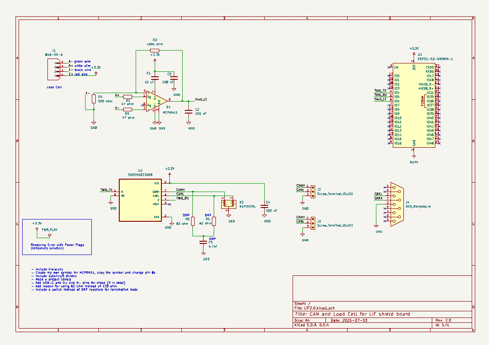

Design Review Meeting
Held a design review meeting to evaluate the first PCB revision and identify improvements before continuing schematic development. Feedback from the meeting will be incorporated into Revision 2 of the board.
Revision 2 Improvements
- Add three USB-C connectors for integration with Nick's external power supply.
- Connect the project databases to the website authentication system.
- Investigate the speaker interface between the Raspberry Pi 4 and ESP32-S3 using I²S (details to be provided by Matvey).
- Reorganize the schematic using hierarchical sheets to improve readability.
- Create a custom KiCad symbol for the MCP6N11 instrumentation amplifier.
- Separate major functional blocks into reusable subcircuits.
- Create a dedicated project symbol and footprint library.
- Add USB-C data lines (D+ and D−) to all three USB-C connectors.
- Document the engineering justification for using split CAN termination (2 × 62 Ω resistors) instead of a single 120 Ω resistor.
- Replace the optional DNP termination resistors with a selectable termination switch for easier testing.
Revision 1 Reference
The existing Revision 1 schematic was reviewed to identify areas that could be simplified before beginning the next PCB revision.

Discussion
Most of the feedback focused on improving long-term maintainability of the PCB rather than correcting electrical issues. By organizing the project into hierarchical blocks, creating reusable symbols, and improving connector placement, the design will be significantly easier to modify as additional hardware is integrated into the system.
Next Steps
- Begin implementing Revision 2 of the PCB schematic.
- Create the custom MCP6N11 symbol.
- Restructure the project into hierarchical sheets.
- Update the CAN termination circuit.
- Add the USB-C connectors and associated circuitry.